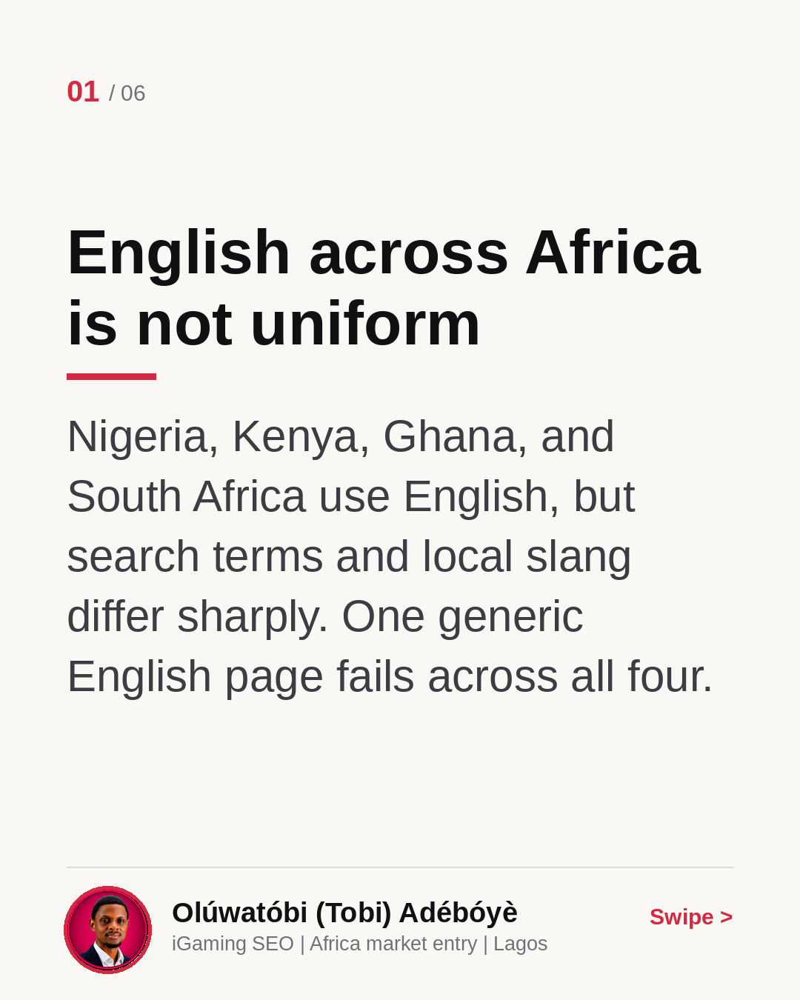
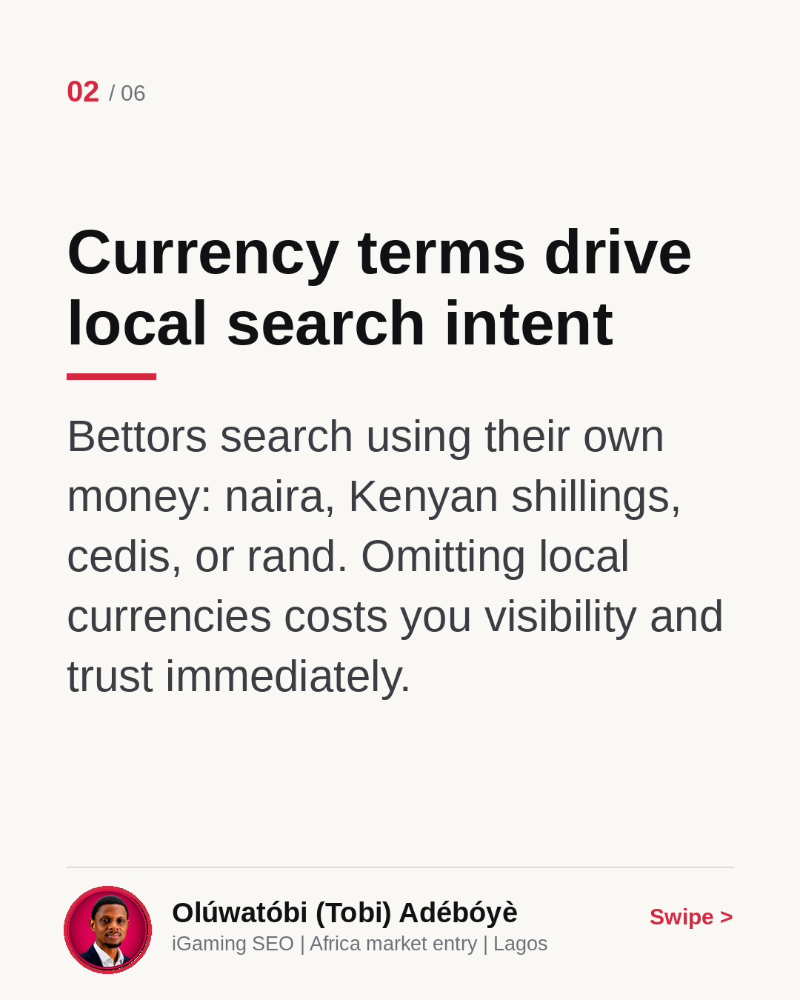
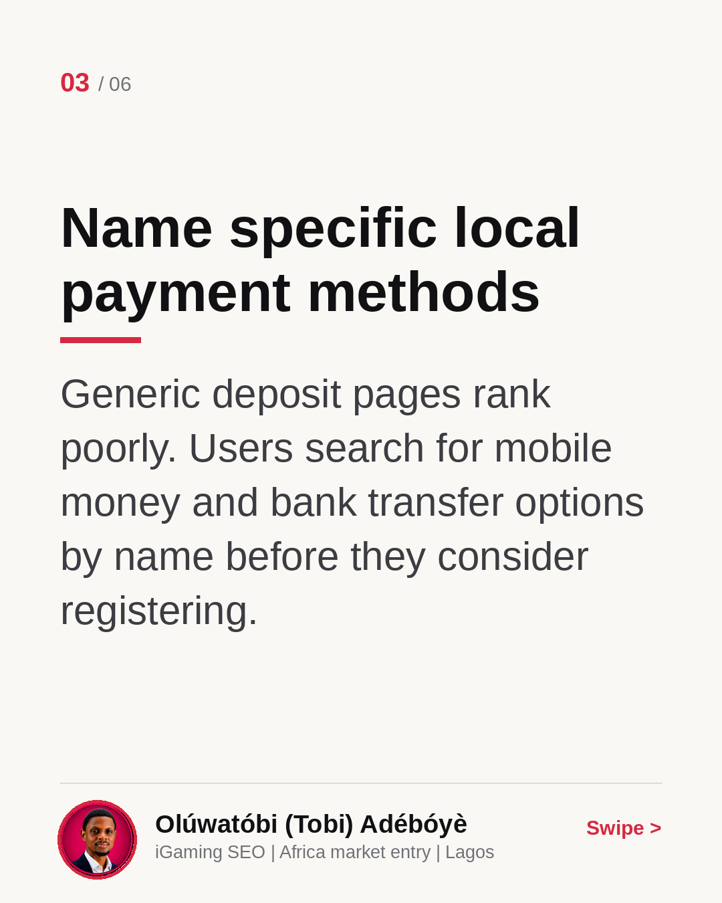
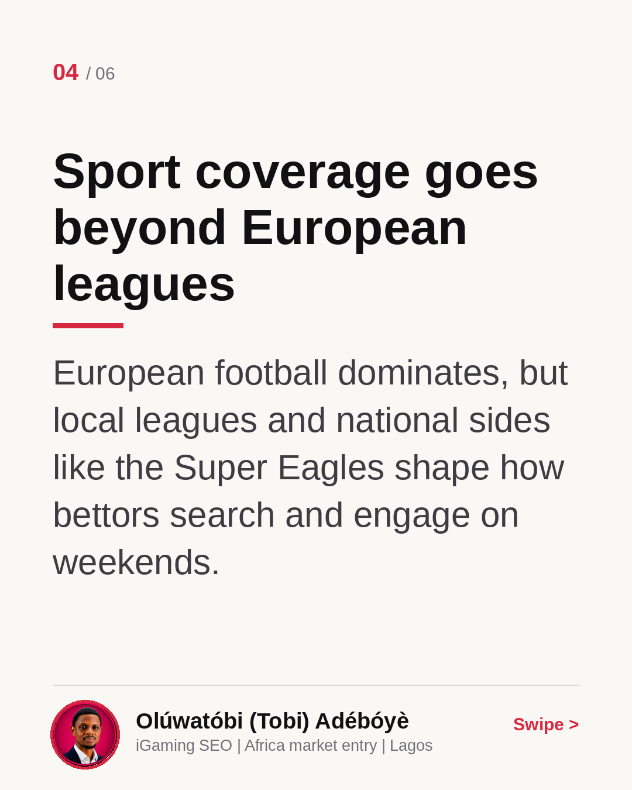
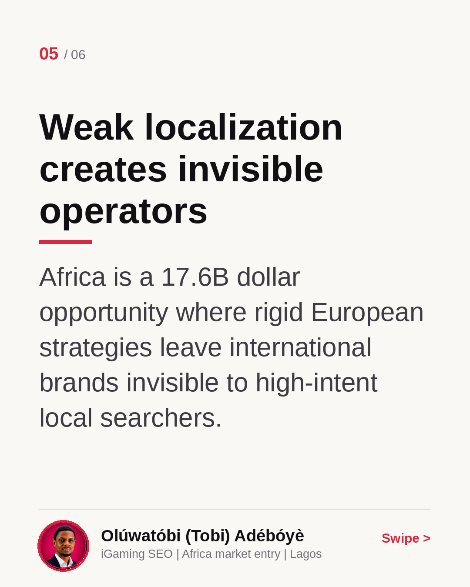
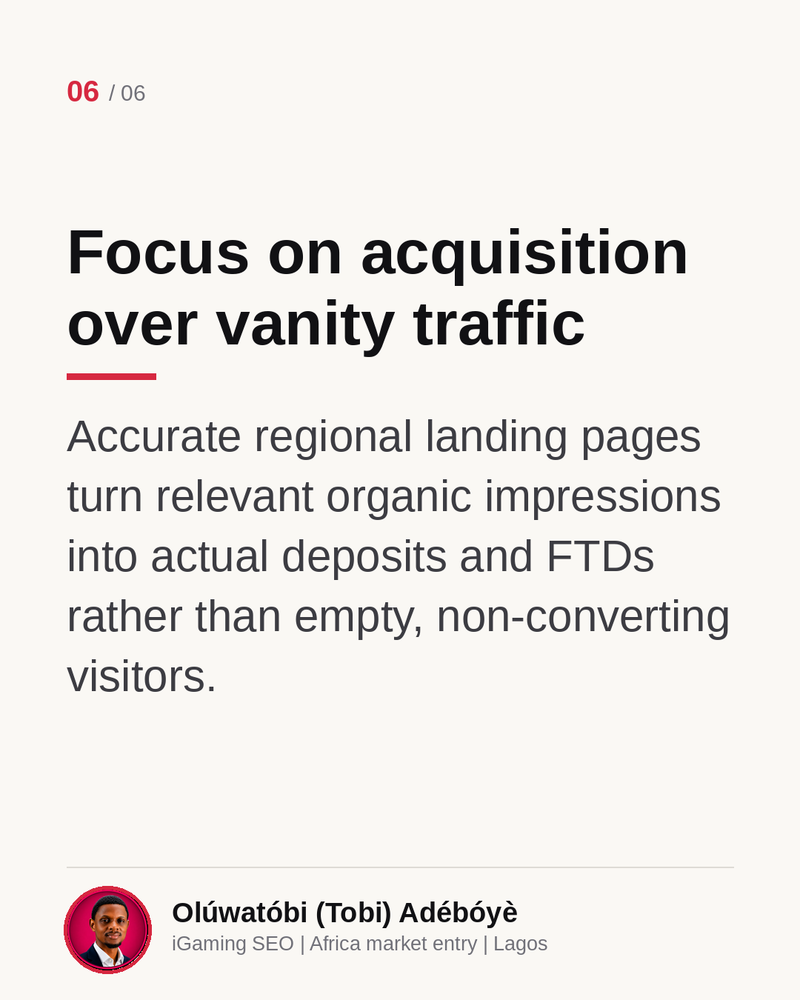

African Localization Is More Than Translating Words
Many European operators treat English-speaking African markets as a single territory. They deploy the same generic landing pages across Nigeria, Kenya, Ghana, and South Africa, then wonder why organic deposits lag. Localization here is about payment methods, distinct currencies, local football, and regional terminology. I broke down where international brands usually miss the mark in this carousel. How do you currently adapt your search content for different regional markets?
English across Africa is not uniform
Nigeria, Kenya, Ghana, and South Africa use English, but search terms and local slang differ sharply. One generic English page fails across all four.

Currency terms drive local search intent
Bettors search using their own money: naira, Kenyan shillings, cedis, or rand. Omitting local currencies costs you visibility and trust immediately.

Name specific local payment methods
Generic deposit pages rank poorly. Users search for mobile money and bank transfer options by name before they consider registering.

Sport coverage goes beyond European leagues
European football dominates, but local leagues and national sides like the Super Eagles shape how bettors search and engage on weekends.

Weak localization creates invisible operators
Africa is a 17.6B dollar opportunity where rigid European strategies leave international brands invisible to high-intent local searchers.

Focus on acquisition over vanity traffic
Accurate regional landing pages turn relevant organic impressions into actual deposits and FTDs rather than empty, non-converting visitors.
